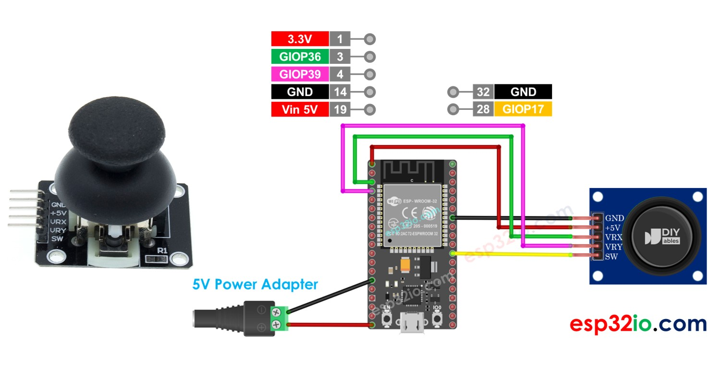
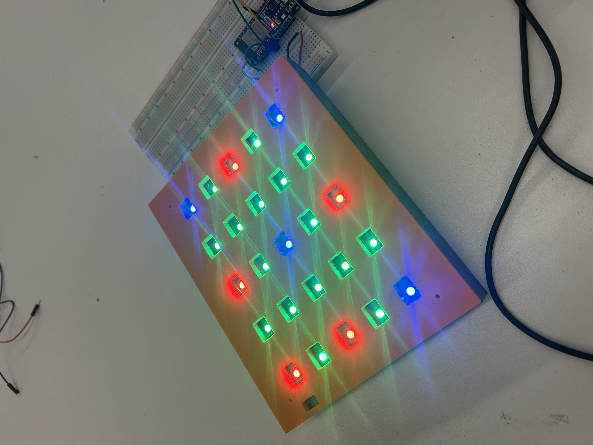
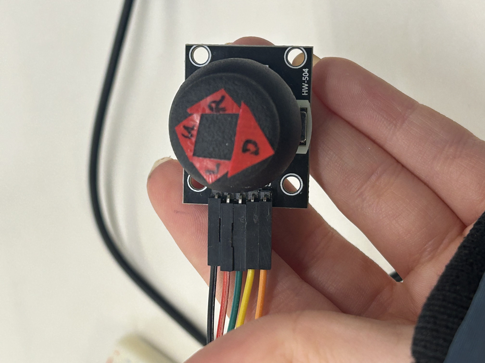

To begin my documentation, I am going to give a major update on my final project idea as I decided to change paths since the last time we spoke.
After carefully evaluating my initial project idea—a sensorized soccer ball—I concluded that it was not feasible due to significant challenges. Specifically, I faced difficulties getting through the inner material of a soccer ball and lacked a solution for securely mounting a circuit board that could withstand high-speed impacts.
Reflecting on the course, I realized I really had fun with electronics week, particularly working with Neopixels. I wanted to incorporate these arrays in my final project, leading me to pivot my project towards creating a multi-game LED display. This idea was inspired by several cool existing Arduino projects, including Flappy Bird on an LED matrix, Tetris on a Dot Matrix Display , and an Atari Breakout game on an 8x8 Matrix.
The first step in working towards a completed final project was to create a rough LED display board for initial code testing. This would help me understand the wiring process and how to work with both Neopixels and also a game joystick. I decided to start with Tic Tac Toe, as it is relatively simple to code and requires minimal hardware. Specifically, the game only needs a 5x5 grid of LEDs, making it an ideal starting point for my integrated prototype.
First, I began building a rough prototype of the LED display board. Since Tic Tac Toe only requires a 5x5 grid, I started by cutting five Neopixel strips, each containing five LEDs. I measured the dimensions of the strips and laser-cut a wooden base with scored lines to mark the strips’ placement. For this initial prototype, I taped the strips onto the base rather than using the permanent adhesive on their backs, allowing me to make adjustments if needed.
Once the LED strips were mounted, I began soldering them together. To ensure consistent power, ground, and signal flow through all of the strips on the board, I connected each strip using three wires: a red wire for power, a black wire for ground, and a blue wire for the data signal. I repeated this soldering process across all five strips, connecting them in sequence.
With the Neopixel array soldered and fully connected, I integrated it with an ESP32 microcontroller, following a standard pinout diagram to ensure the connections were correct.
To test the wiring and soldering, I ran a basic Neopixel test code shown below.
The test confirmed that all LEDs lit up and were functioning as expected, indicating that the soldering and wiring was successful.
To house the LED display, I designed a two-part 3D-printed enclosure on Fusion. The first model was a back panel to hold the LED board and accommodate the wires. The second part was a top cover with square openings aligned with each LED, allowing the light to project through. I carefully measured the spacing between each individual LED and between each strip to ensure precise alignment of the openings.
Using the Extrude tool, I also created recessed pockets in the back panel to manage wire routing and provide space for the soldered wire connections jutting out of the board. Once the design was complete, I printed the back panel, which took approximately 16 hours, and the top cover, which took about 5 hours.
Here you can access the .stl file for the back panel and the .stl file for the top cover.
After finalizing the design for the display casing, I moved on to integrating a joystick to control the LEDs. I chose the HW-504 joystick and followed this wiring diagram to connect it to my ESP32.
With the hardware assembled, I shifted my focus to coding the Tic Tac Toe game. I began by setting up the LED grid with static green LEDs to represent the game’s border. The green LEDs outlined columns two and four, as well as rows two and four, creating a 3x3 play area within the 5x5 grid.
After several hours of coding, the most challenging part was getting the joystick to accurately navigate the LEDs—moving smoothly from left to right and up and down on the grid. For simplicity, I replaced the traditional X’s and O’s with red LEDs for Player 1 and blue LEDs for Player 2. This meant I also had to figure out how to toggle the LED color: the first press of the joystick would turn the selected LED red, while the next press would switch it to blue. Below is the code that brought me this functionality:
This is what the display looked like when I ran that code:
Once the code started working, I focused on assembling the display by inserting the LED board into the 3D-printed enclosure. Initially, the LED board didn’t fit into the back container—it was off by about 1 mm. After about 20 minutes of sanding, I managed to fit the LED display snugly inside, with the wires fitting perfectly.
Here’s how the display looked once mounted in the backing:
I then added the top cover. Although I knew I’d need to reprint the cover with different screw placements and a new filament color, it was sufficient for testing.
The next critical task was programming the game logic. I began by listing all eight possible ways a player could win. I then integrated that logic into the code to check if the red or blue team had achieved a win condition. Afterward, I added a final touch: when the red team won, all LEDs briefly flashed red before resetting the game, and the same happened for blue.
Here is the final code for the tic tac toe game board:
Here’s the result of that code in action:
One issue I encountered was the difficulty of accurately moving the joystick to the desired positions—directional movement was unclear. To solve this, I added directional arrows to the joystick, making navigation much easier!
Moving forward, I plan to scale up the LED display by upgrading it to a 64x64 matrix and expanding its enclosure to accommodate the new design. Additionally, I will 3D print a resin cover to saturate the brightness of the lights so it is easier on the eyes. Once the display is fully assembled, I will develop code for additional games and design a mechanism to attach a joystick, transforming the setup into an interactive arcade-style game board.